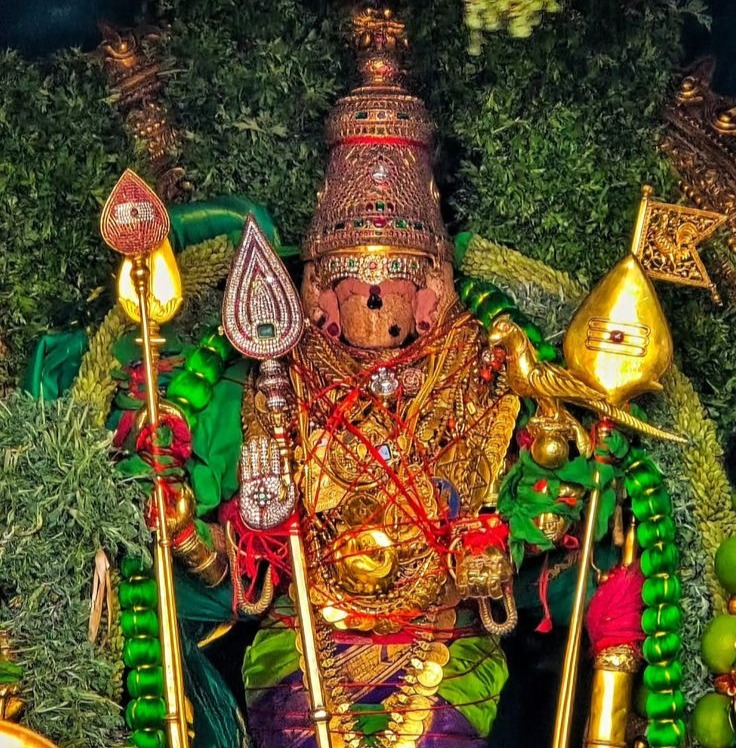
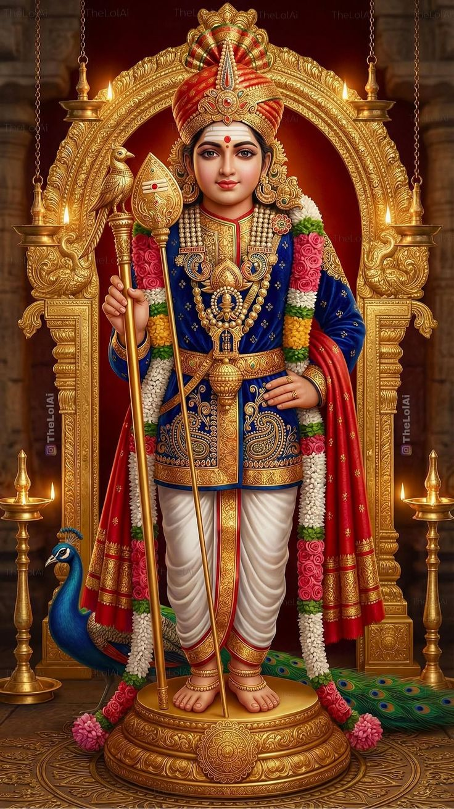
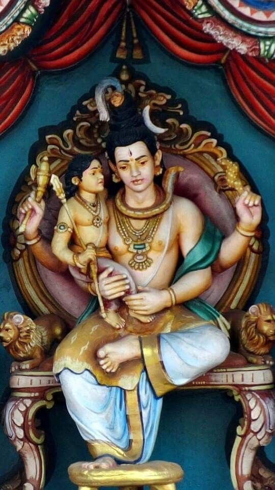
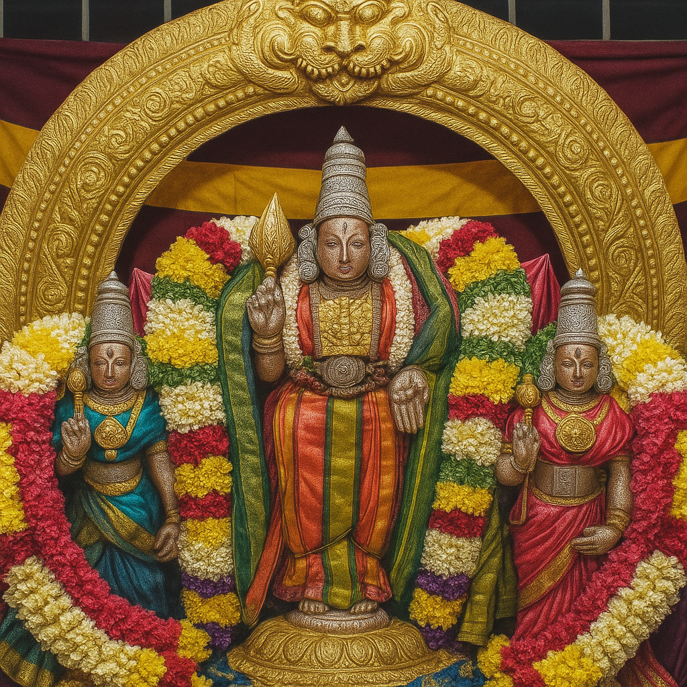
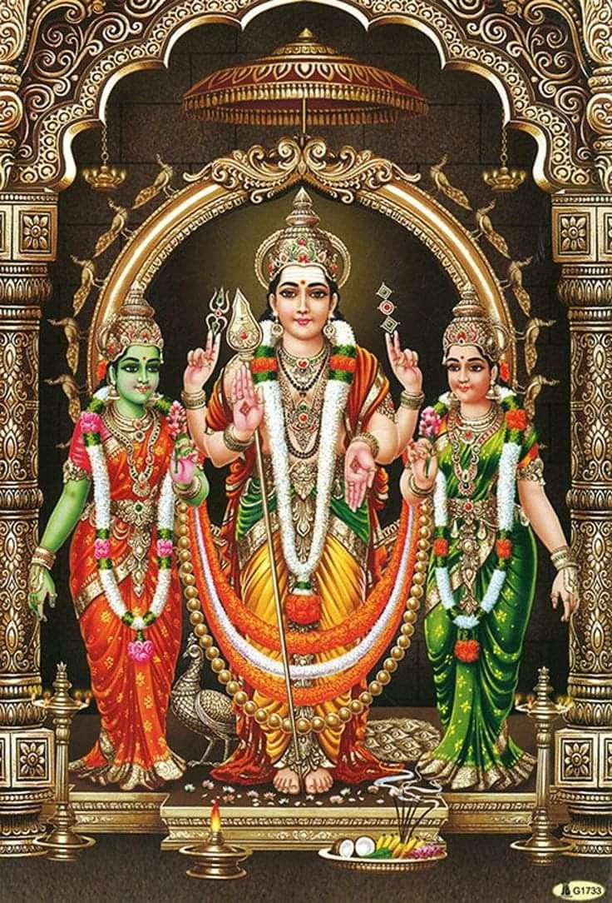

Arupadai Veedu
The Six Sacred Abodes of Lord Muruga

Thiruchendur
📍 Thoothukudi, Tamil Nadu
Thiruchendur is a coastal temple standing majestically by the sea. It is here that Lord Muruga defeated the demon Surapadman and is worshipped as Senthilnatha. The sound of the waves and the temple bells together create an atmosphere of divine bliss unlike any other.
Thiruparankundram
📍 Madurai, Tamil Nadu
One of the oldest rock-cut temples in Tamil Nadu, Thiruparankundram is where Lord Muruga married Devasena, the daughter of Lord Indra, after his victory in war. The temple is carved directly into a hillside and is a breathtaking example of ancient Dravidian architecture.

Palani
📍 Dindigul, Tamil Nadu
Perched atop a hill, Palani is one of the most visited shrines in India. Lord Muruga is worshipped here as Dandayudhapani — the ascetic holding a staff — after renouncing worldly pleasures when Sage Narada awarded the fruit of wisdom to Lord Ganesha.

Swamimalai
📍 Kumbakonam, Tamil Nadu
At Swamimalai, Lord Muruga is revered as Swaminatha — the teacher who taught the meaning of the Pranava mantra Om to his own father Lord Shiva. This unique role of son becoming the guru of his father makes this abode especially significant.

Thiruthani
📍 Tiruvallur, Tamil Nadu
After his victory over Surapadman, Lord Muruga came to Thiruttani to cool his divine energy. Here he is worshipped as Subramanya. It is also the sacred place where he married Valli, the daughter of a tribal chieftain, symbolising his bond with all of humanity.

Pazhamudircholai
📍 Madurai, Tamil Nadu
Nestled amidst lush green hills and forests near Madurai, Pazhamudircholai is the only abode that is not on a hilltop but within a forest grove. Lord Muruga is worshipped here as Kumaraswamy surrounded by the beauty of nature in full bloom.